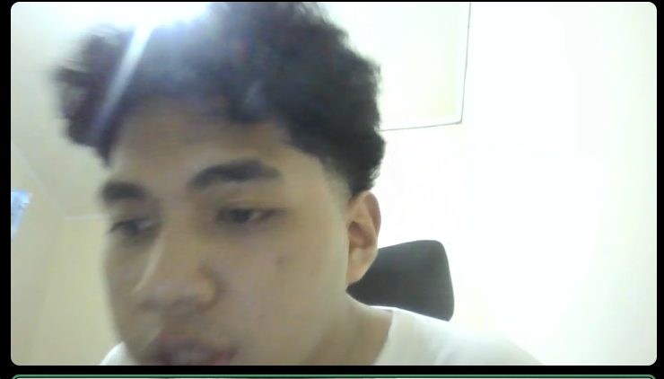

01
People Skills
Memahami karakter, kebutuhan, dan cara berinteraksi dengan orang yang berbeda.
Mahasiswa S1 Teknik Elektro Telkom University dengan pengalaman leadership, coaching, organisasi, dan komunikasi dengan berbagai karakter. Tertarik pada Marketing Communication karena ingin menghubungkan informasi dengan audiens secara dekat, jelas, dan relevan.

Kemampuan yang terbentuk dari pengalaman coaching, organisasi, komunitas, dan proses belajar di Teknik Elektro.
Memahami karakter, kebutuhan, dan cara berinteraksi dengan orang yang berbeda.
Menyampaikan arahan dan informasi dengan jelas serta mudah dipahami.
Membangun hubungan yang positif dan komunikasi yang nyaman dengan orang baru.
Menyesuaikan pendekatan komunikasi berdasarkan karakter dan situasi.
Ringkas, terstruktur, dan fokus pada kemampuan yang relevan dengan komunikasi dan promosi.
Membimbing sekitar 40 atlet, memimpin latihan, memberikan arahan dan evaluasi, menjaga motivasi, serta menyesuaikan komunikasi dengan karakter masing-masing atlet.
Belajar berkomunikasi, berkoordinasi, bekerja sama dalam tim, dan berinteraksi dengan berbagai karakter di lingkungan kampus.
Terlibat dalam eksplorasi proyek teknologi, termasuk Computer Vision dan OpenCV, sambil belajar bekerja dalam tim dan menyelesaikan tantangan secara sistematis.
Belajar bersama, bertukar wawasan, berkolaborasi, dan membangun koneksi dalam komunitas teknologi kampus.
Portofolio ini mengikuti prinsip Jobstreet: ringkas, rapi, relevan, dan menampilkan bukti pengalaman yang paling dekat dengan peran yang dituju.
Portofolio yang merangkum pemahaman Tel-U & SMB, pengalaman, kekuatan komunikasi, dan alasan memilih Marketing Communication.
Pengalaman langsung memimpin, mengevaluasi, menjaga motivasi, dan menyesuaikan komunikasi dengan karakter atlet.
Pengalaman proyek teknologi yang melatih kerja tim, problem solving, pembelajaran hal baru, dan pendekatan sistematis.
Saya ingin menggunakan pengalaman berkomunikasi, memimpin, dan berinteraksi dengan berbagai karakter untuk membantu calon mahasiswa mengenal Telkom University dengan cara yang dekat, jelas, dan menarik. Bagi saya, Marketing Communication bukan sekadar menyampaikan informasi, tetapi memahami audiens, membangun komunikasi yang nyaman, dan menciptakan ketertarikan yang relevan.
Philip Hardiwijaya Lo · S1 Teknik Elektro · Telkom University · Marketing Communication — FGD Promosi